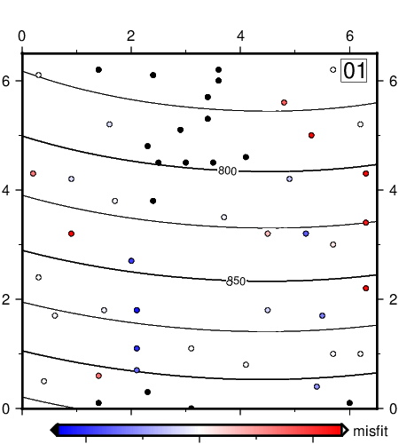

(5) Control spline gridding via eigenvalues¶
Our next animation performs gridding using cubic splines but restricts the solution to using only the first k eigenvalues of the 52 that are required for an exact interpolation of this data set consisting of 52 points. We use greenspline to grid the data and select an ever-increasing number of eigenvalues, then show a contour map of the evolving surface. The data misfits are indicated by the colored circles; as we approach the full solution these all become white (no misfit). These 52 frames are well suited for an animated GIF.
#!/usr/bin/env bash
# GMT ANIMATION 05
#
# Purpose: Make web page with simple animated GIF of gridding
# GMT modules: grdcontour, greenspline, plot, text, movie
# Unix progs: echo, cat
# Note: Run with any argument to build movie; otherwise 1st frame is plotted only.
if [ $# -eq 0 ]; then # Just make master PostScript frame 27 (az = 135)
opt="-M9,ps -Fnone"
ps=anim_05.ps
else # Make animated GIF, infinitely looping
opt="-A+l"
fi
# 1. Create files needed in the loop
cat << EOF > pre.sh
gmt makecpt -Cpolar -T-25/25 > t.cpt
EOF
# 2. Set up the main frame script
cat << EOF > main.sh
gmt begin
let k=\${MOVIE_FRAME}+1
gmt greenspline @Table_5_11.txt -R0/6.5/0/6.5 -I0.05 -Sc -Gt.nc -D1 -Cn\${k} -Emisfit.txt
gmt grdcontour t.nc -C25 -A50 -Baf -BWsNE -JX4i -Gl3.6/6.5/4.05/0.75 -X0.25i -Y0.4i
gmt plot misfit.txt -Ct.cpt -Sc0.15c -Wfaint -i0,1,4
printf "%2.2d" \$k | gmt text -F+cTR+jTR+f18p -Dj0.1i -Gwhite -W0.25p
gmt psscale -Ct.cpt -DJBC+e -Bxaf -By+l"misfit"
gmt end
EOF
# 3. Run the movie
gmt movie main.sh -C4.5ix5.0ix100 -Nanim_05 -T@Table_5_11.txt -Sbpre.sh -D10 -Q $opt
rm -rf main.sh pre.sh

{kind=link}
Evolution of a splined grid.